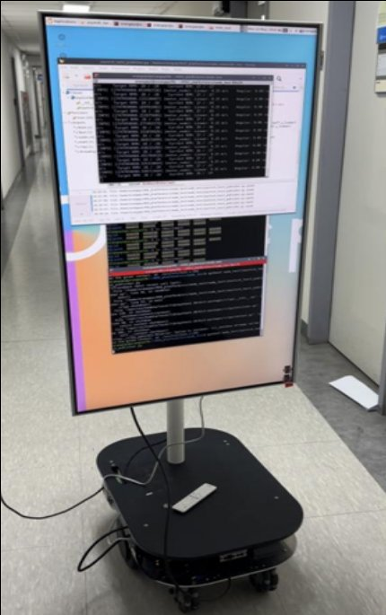
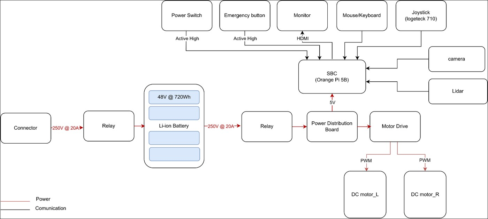
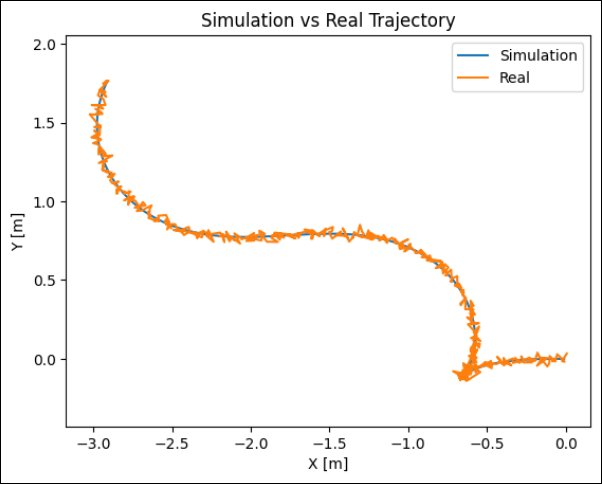
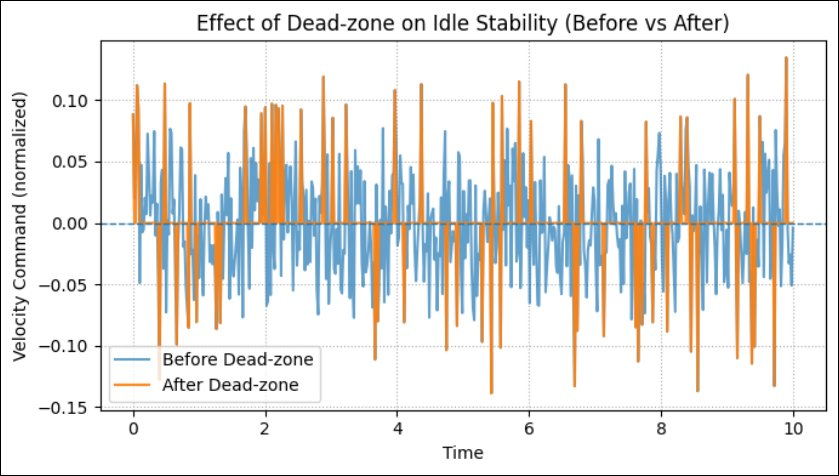
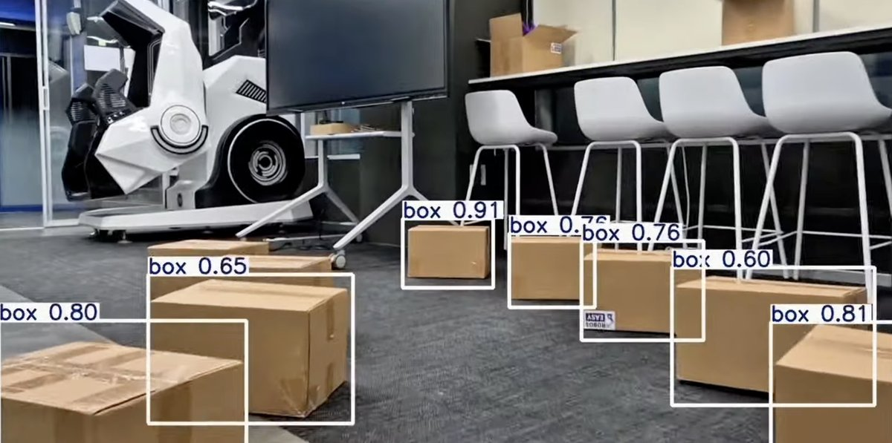

2025 1학기
Modular Mobile Platform
HSU 이동 로봇 표준 플랫폼 — ROS2 모듈형 이동 로봇
🏆 성과공유회 최우수상(1위)Overview
기간2025 1학기 (진로탐색학점제)
팀학부생 4명
성과🏆 성과공유회 최우수상(1위)
역할SBC 연결 및 전원부(파워 서플라이) 설치, 카메라 노드 구현, 시스템 구조 분석 및 블록 다이어그램 작성
센서·제어·인지 기능을 ROS2 노드 단위로 나눠, 하드웨어가 바뀌어도 전체를 다시 만들지 않고 모듈만 갈아 끼울 수 있는 이동 로봇 플랫폼을 만들었습니다. 목표는 「Design Once, Extend Anywhere」 — 한 번 만든 구조를 이동 로봇, 로봇팔, 물류·서비스 로봇에 그대로 재사용하는 것입니다.
01 · System Architecture


- 하드웨어 — Orange Pi 5B(SBC), 2륜 DC 모터 + 모터 드라이버, 카메라, LiDAR, Logitech F710 조이스틱, 상단 모니터
- 소프트웨어 — Ubuntu + ROS2, Publisher/Subscriber 구조의 조이스틱 · 모터 · 카메라 노드
- 모듈 분리 — 노드끼리는 토픽으로만 연결해, 특정 하드웨어를 바꿔도 해당 노드만 수정
02 · Drive Control
- Differential Drive 방식 조향 — 조이스틱 입력(왼쪽 스틱 Y축 = 속도, 오른쪽 스틱 = 각도)을 선속도 v · 각속도 ω로 바꾸고, 좌우 바퀴를 독립 제어해 직진·곡선·제자리 회전을 하나의 제어 로직으로 처리
- 급격한 조향 입력을 막는 가속도 제한·속도 보정, 터미널로 모터 출력값을 실시간 확인


문제 → 해결
- 정지했는데 로봇이 떨림 — 조이스틱 raw 입력의 노이즈 때문에 정지 상태에서도 작은 속도 명령이 계속 나감 → 임계값 이하 입력을 무시하는 dead-zone 적용으로 idle 진동 제거
- 저속 정밀도 vs 고속 출력 — 입력과 출력 속도를 비선형 매핑해 저속에서는 섬세하게, 고속에서는 충분한 출력이 나오도록 설계
03 · Camera Perception
- 체커보드 캘리브레이션으로 렌즈 왜곡 보정 (내부 파라미터·왜곡 계수 추정)
- Grayscale → Gaussian Blur → Canny Edge → Hough Transform으로 주행 라인 검출, 결과를 주행 제어 노드로 전달
04 · After the Program

- 진로탐색제가 끝난 뒤에도 같은 플랫폼 위에 YOLOv5 실내 객체 인식과 로봇팔 모듈을 추가로 통합 — 모듈형 구조가 실제로 확장된다는 것을 확인